Quy trình & Ví dụ¶
Các Driver đơn giản có thể được cấu hình từ pop-over xuất hiện khi thêm một Driver mới. Khi thêm nhiều Driver hoặc cho các cấu hình nâng cao hơn, việc mở sẵn Drivers Editor sẽ rất hữu ích.
Driver dạng Transform¶
Điều khiển một thuộc tính bằng transform của một object. Trong ví dụ này, góc xoay Y của Object 2 sẽ được điều khiển bởi vị trí X của Object 1. Bắt đầu từ một thiết lập đơn giản với hai object:
Thêm một Driver vào thuộc tính Rotation Y của object thứ hai qua menu ngữ cảnh hoặc bằng Ctrl-D.
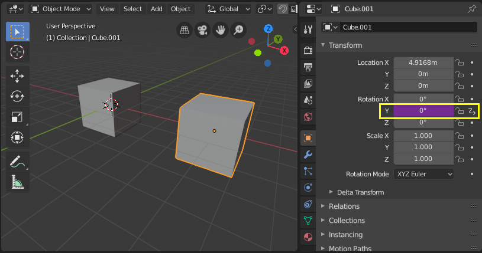
Mở Drivers Editor và chọn thuộc tính Y Euler Rotation trong vùng channels.
Mở vùng Sidebar và chọn tab Drivers.
Cấu hình driver thành Averaged Value của một Transform Channel của object thứ nhất.
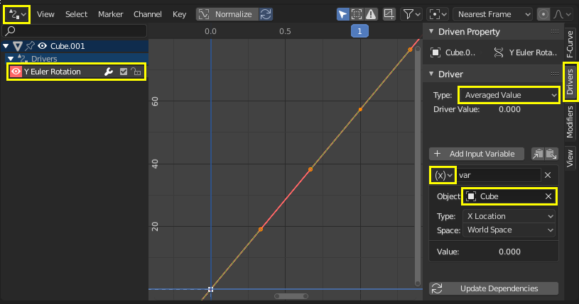
Thử di chuyển object thứ nhất và để ý cách nó ảnh hưởng đến góc xoay Y của object thứ hai.
Scripted Expression - Quỹ đạo quanh một điểm¶
Cho vị trí của một object chuyển động theo quỹ đạo quanh một điểm bằng một Scripted Expression tùy chỉnh. Vị trí của object sẽ thay đổi khi scrub timeline. Dùng lượng giác, chuyển động tròn có thể được định nghĩa trong 2D bằng các hàm sine và cosine. (Xem Đường tròn đơn vị.) Trong ví dụ này, frame hiện tại được dùng làm biến tạo ra chuyển động. frame là một Simple Expression tương ứng với bpy.context.scene.frame_current.
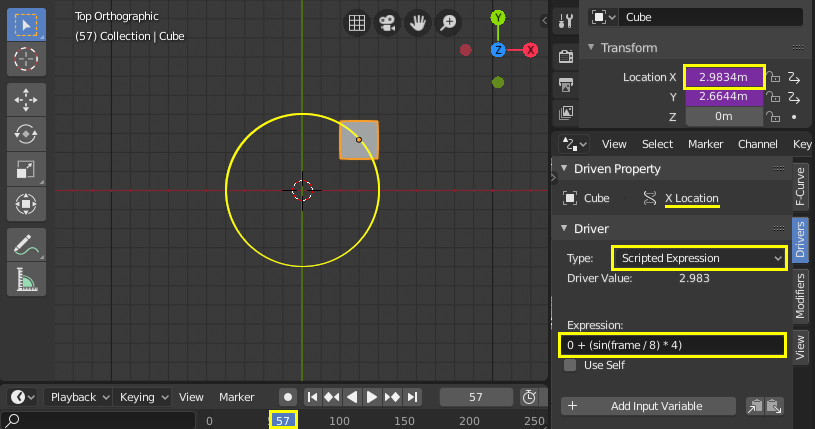
Thêm một driver vào thuộc tính X Location.
Đặt Driver Type thành Scripted Expression.
Thêm biểu thức
0 + (sin(frame / 8) * 4), trong đó:frame/8: là frame hiện tại của animation, chia cho 8 để làm chậm quỹ đạo lại.(sin( )*4): nhân kết quả củasin(frame/8)với 4 để được vòng tròn lớn hơn.0 +: dùng để điều khiển offset so với điểm tâm quỹ đạo.
Thêm một driver vào thuộc tính Y Location với biểu thức
0 + (cos(frame / 8) * 4).Scrub timeline để xem hiệu quả. Thử nghiệm với các biến để điều khiển kích thước và tâm của quỹ đạo.
Hàm tùy chỉnh - Giá trị bình phương¶
Tạo một hàm tùy chỉnh để lấy bình phương của một giá trị (tức là value2). Việc thêm hàm vào Driver Namespace cho phép dùng nó từ các biểu thức driver. Driver Namespace có danh sách các hàm tích hợp sẵn dùng trong biểu thức driver, cùng các hằng số như π và e. Chúng có thể được xem qua Python Console:
>>> bpy.app.driver_namespace[' <tab>
acos']
acosh']
asin']
asinh']
atan']
...
Để thêm một hàm mới vào Driver Namespace, cần viết hàm đó rồi thêm vào bpy.app.driver_namespace.
Thêm đoạn sau vào Text Editor bên trong Blender và nhấn Run Script.
import bpy def square(val): """Returns the square of the given value""" return val * val # Add function to driver_namespace. bpy.app.driver_namespace['square'] = square
Thêm một driver với Scripted Expression chẳng hạn
square(frame).Quan sát hiệu quả khi scrub timeline.
Có thêm các ví dụ về hàm tùy chỉnh trong Text Editor của Blender: . Vì Simple Expressions không thể truy cập các hàm tùy chỉnh nên việc dùng chúng chỉ hợp lý cho các phép tính phức tạp.
Cảnh báo
Việc cố thay thế các mục tích hợp sẵn của driver namespace có thể dẫn đến hành vi không xác định.
Tra cứu Attribute của View Layer¶
Attribute Node của material ở chế độ View Layer tự động tìm kiếm thuộc tính attribute ở nhiều vị trí. Ví dụ, điều này cho phép đặt một giá trị nhất định cho custom attribute ở cấp Scene hoặc World, sau đó ghi đè khác đi cho riêng một View Layer.

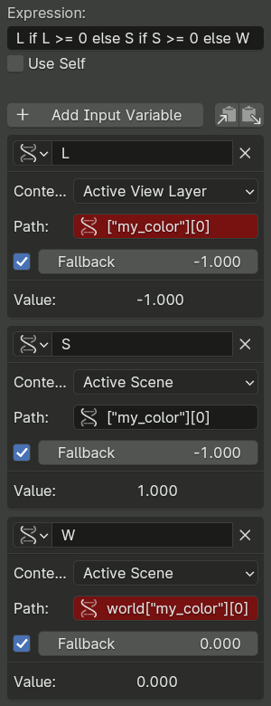
Context Properties của driver không triển khai hành vi này, nên nếu cần phải tự mô phỏng thủ công qua các giá trị fallback và một biểu thức điều kiện (điều kiện là Simple Expressions).
Với một attribute tên là attr, node lần lượt thử sáu lần tra đường dẫn RNA theo thứ tự sau:
["attr"]trong View Layer đang hoạt động (custom property).attrtrong View Layer đang hoạt động (thuộc tính tích hợp sẵn).["attr"]trong Scene đang hoạt động.attrtrong Scene đang hoạt động.world["attr"]trong Scene đang hoạt động.world.attrtrong Scene đang hoạt động.
Tùy thuộc vào thuộc tính cụ thể, có thể chỉ cần kiểm tra một tập con của các vị trí này là đủ. Ví dụ, hình bên phải cho thấy cách truy cập một attribute được biết chắc chắn là custom property mang giá trị màu.
Các biến driver truy cập những vị trí không phải cuối cùng trong chuỗi tra cứu nên dùng giá trị fallback không hợp lệ cho attribute (ví dụ giá trị màu âm), để rồi biểu thức điều kiện có thể kiểm tra. Biến cuối cùng nên fallback về một giá trị mặc định hợp lệ, dùng khi thuộc tính hoàn toàn chưa được đặt.
Driver cho Shape Key¶
Cải thiện biến dạng Mesh¶
Khắc phục các vấn đề giao nhau (intersection) xảy ra khi dùng armature và weight painting, đặc biệt ở các khớp. Shape key cũng có thể được dùng để tinh chỉnh và hoàn thiện một rig, ví dụ để gợi ý hình thái cơ bắp. Trong ví dụ này, một shape key được dùng để cải thiện biến dạng ở khuỷu của một cánh tay sơ khai.
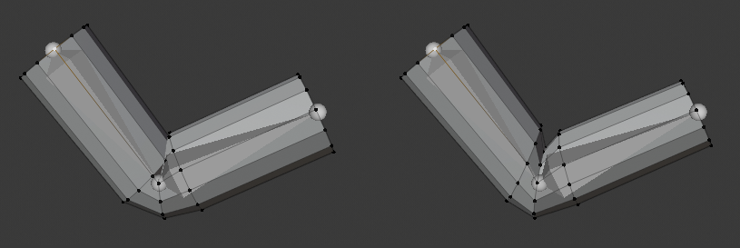
Trái: Biến dạng mesh theo xương chưa được chỉnh. Phải: Đã áp corrective shape key¶
- Thiết lập
Thêm một mesh (trong ví dụ này là một hình trụ có loop cut).
Thêm một armature với một chuỗi bone.
Skin mesh vào armature bằng weight painting.
(Lưu ý: để parent mesh vào armature: chọn mesh trước, rồi chọn armature và dùng Ctrl-P để parent với auto weights.)
Thử tạo các pose cho armature và quan sát biến dạng ở khớp. Để khắc phục các vấn đề giao nhau hoặc những góc độ trông chưa đạt, bạn có thể gắn một Shape Key với một pose.
- Shape Key
Tạo pose cho armature sao cho các vấn đề hiển thị rõ. Nhớ bao gồm cả các pose cực đoan mà bạn muốn rig hỗ trợ.
Với mesh đang được chọn, thêm một Shape Key mới bên cạnh khóa Basis.
Để chỉnh shape key trên nền biến dạng của armature, bật cả Edit Mode Display và Cage Editing trong Armature modifier.
Vào Edit Mode và chọn shape key mới trong panel thuộc tính. Chỉnh các vertex theo ý muốn. Chọn khóa Basis để chuyển đổi qua lại giữa mesh gốc và phần bạn đã chỉnh. (Lưu ý: cẩn thận chỉ áp các chỉnh sửa vào shape của bạn, không áp vào mesh gốc hay các khóa hiện có khác.)
Khi bạn đã hài lòng với vẻ ngoài của biến dạng ở pose có vấn đề, bạn cần cấu hình một driver để kích hoạt shape một cách mượt mà khi vào đúng vị trí đó.
- Driver
Thêm một driver vào Value của shape key bạn đã tạo.
Mở Drivers Editor và chọn driver.
- Cách 1 -- Ánh xạ trực tiếp sang giá trị xoay của bone
Một cách đơn giản để cấu hình driver là cho tương ứng trực tiếp giá trị của kênh xoay một bone với Value kích hoạt shape key. Cách này có nhược điểm là chỉ dựa vào một kênh xoay duy nhất của bone, có thể chưa đủ để diễn đạt chính xác điều kiện mà shape key cần được kích hoạt.
Trong tab Drivers, chọn Averaged Value của góc xoay bone mà bạn đang tạo pose.
Nắm rõ trục xoay mà bạn quan tâm bằng cách bật hiển thị trục trong armature hoặc quan sát giá trị transform của bone trong Properties.
Chọn kênh xoay và đặt thành local, nghĩa là giá trị xoay của bone tương đối so với bone parent của nó.
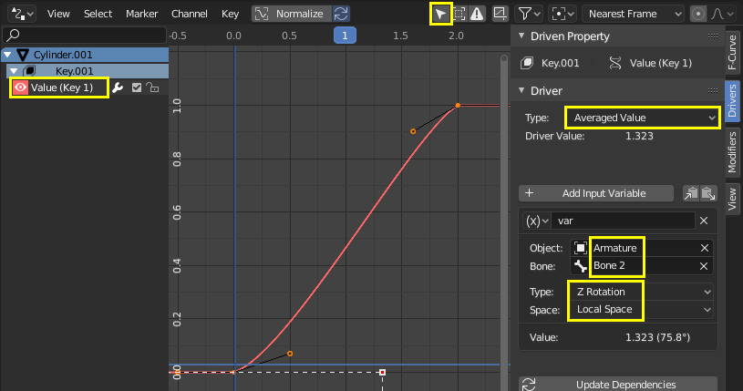
Thiết lập thủ công các điểm trên đường cong driver bằng cách chọn một handle và kéo nó, hoặc nhập giá trị trong tab F-Curve. Trục Y biểu diễn Value của shape key, nên chạy từ 0.0 đến 1.0. Trục X thường là frame, nhưng với driver này nó biểu diễn giá trị xoay theo radian. Bạn có thể có hơn hai điểm trên đường cong và tinh chỉnh các chuyển tiếp bằng các handle trong khung xem đường cong (G để di chuyển).
Để kiểm chứng driver hoạt động đúng, hãy bỏ chọn tùy chọn chỉ hiển thị driver của các object được chọn. Nhờ đó, bạn có thể tạo pose cho armature mà vẫn để mắt đến driver.
- Cách 2 -- Chênh lệch góc xoay so với bone đích
Cách này đòi hỏi thêm một bone target hoặc corrective, nhưng diễn đạt điều kiện không gian 3D của bone gây vấn đề tốt hơn.
Trong Edit Mode của armature, thêm một bone mới extrude từ Bone 1, tại vị trí mà Bone 2 phải có shape key kích hoạt. Loại bone này thường theo quy ước đặt tên như "TAR-" (target) hoặc "COR-" (corrective).
Trong tab Drivers, chọn Averaged Value của chênh lệch góc xoay giữa bone bạn đang xoay và bone target. Chênh lệch góc xoay là góc nhỏ nhất giữa hai object trong World Space. Vì vậy, điều quan trọng là các bone phải cùng root, sao cho thứ duy nhất ảnh hưởng đến góc giữa chúng là độ xoay của một trong hai. Khi bone biến dạng (Bone 2) đạt tới góc xoay mục tiêu (TAR-Bone 2), chênh lệch góc xoay sẽ là 0°.
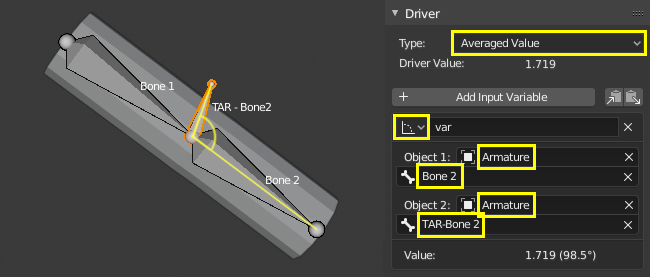
Chỉnh thủ công các handle của đường cong driver sao cho Value của shape key (trục Y) là 1.0 khi chênh lệch góc xoay (trục X) là 0°. Value nên là 0.0 khi cánh tay duỗi thẳng, lúc đó chênh lệch góc xoay nên vào khoảng 90° trở lên (tính bằng radian).
Xem các bước ở Cách 1 để biết cách chỉnh handle của đường cong và xác nhận chức năng hoạt động. Tạo pose cho armature để kiểm tra các khoảng giá trị đã đúng chưa.
Các Relative Shape Key nối tiếp¶
Kích hoạt các shape key khác nhau nối tiếp nhau. Trong ví dụ này, di chuyển một bone duy nhất sẽ kích hoạt trước Key 1 rồi đến Key 2. Xem thêm relative shape key trộn theo kiểu cộng.
- Shape Keys
Thêm hai shape key vào một mesh, bên cạnh khóa Basis.
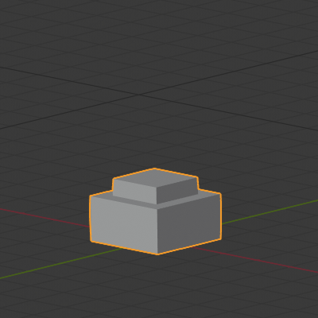 Basis.¶ |
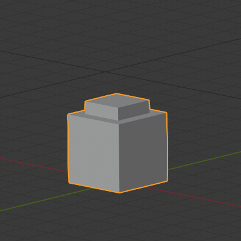 Key 1: các face trên cùng được nâng lên 1 m.¶ |
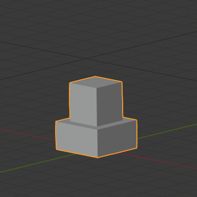 Key 2: phần trên cùng phía trong được nâng lên 1 m.¶ |


- Drivers
Thêm một armature với một bone duy nhất để điều khiển các shape key. Mục tiêu là kích hoạt các khóa lần lượt khi bone này di chuyển lên.
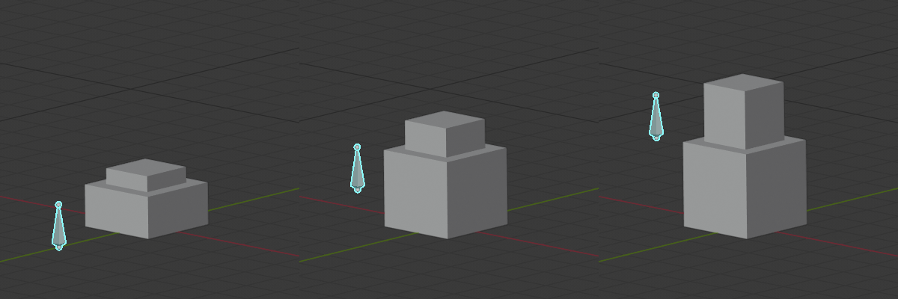
Như hình trên minh họa, khi bone đi được nửa đường, cả Key 1 và Key 2 đều có ảnh hưởng. Việc Key 1 nên đạt Value tối đa trước khi Key 2 bắt đầu kích hoạt, hay chúng nên chồng lấn bao nhiêu, là tùy sở thích. Ví dụ này thể hiện một sự pha trộn liền mạch.
Để có sự pha trộn liền mạch có chồng lấn, Key 1 nên có Value là 0.0 khi bone ở dưới đáy và tăng tuyến tính lên 1.0 cho đến khi bone vượt qua độ cao điểm giữa. Key 2 nên có giá trị 0.0 trước độ cao điểm giữa và sau đó tăng với cùng tốc độ như Key 1 cho đến khi đạt Value 1.0 khi bone ở độ cao tối đa.
Thêm driver vào Value của Key 1 và Key 2. Trong tab Drivers, cấu hình cả hai driver thành Averaged Value của một biến mang vị trí Z của bone.
Xác định khoảng chuyển động của bone trên trục Z thế giới bằng cách di chuyển nó lên sao cho thẳng hàng với đỉnh mesh khi cả hai khóa cùng kích hoạt. Ở đây ta sẽ dùng [0.0, 2.5].
Cấu hình các hàm driver sao cho Value của các shape key (trục Y) như mong muốn ứng với độ cao của bone (trục X).
Các hàm driver nên là tuyến tính, do đó chúng có thể được định nghĩa bằng phân tích với hàm dạng \(y = a + bx\), trong đó \(a\) là offset theo \(y\) còn \(b\) là độ dốc.
Trong tab Modifiers, thêm một Generator kiểu Extended Polynomial cho cả hai driver.
Thử nghiệm với các giá trị \(a\) và \(b\) sao cho các đường cong chạy từ [0.0, 1.0] trên trục Y và từ [0.0, 2.5] trên trục X. Các đường cong nên chồng lấn nhau ở vùng giữa của trục X và nên có cùng độ dốc (\(b\)).
Các giá trị khả dụng là Key 1: \(y = 0.0 + 0.6x\) và Key 2: \(y = -0.5 + 0.6x\).
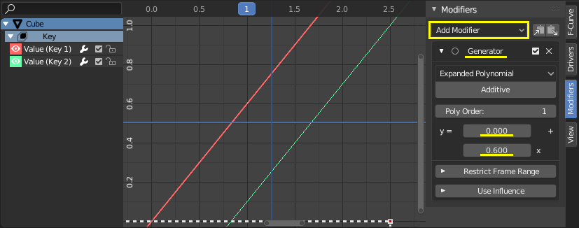
Lưu ý rằng các hàm vượt ra ngoài khoảng [0.0, 1.0] cho Value của shape key, nhưng điều đó không có tác động gì vì Value đã bị giới hạn trong một Range ở panel Shape Keys.